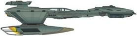

Impero Klingon - Classe D5 |
Nave stellare che rappresentava il meglio della Flotta Imperiale negli anni 2160.
| Vor'tas Comandato da Duras. Nel 2152 si scontra con l'Enterprise e per questo motivo Archer viene poi messo sotto processo. Nel 2153 viene inviato in missione dall'Alto Consiglio per trovare i ribelli che Archer aveva liberato e uccidere quest'ultimo. Distrutto dall'Enterprise all'interno della Distesa Delfica. | Judgment, The Expanse |
| [Senza Nome] Comandata dal capitano Volok. Viene dotata di una o più sale ologrammi. | Unexpected |